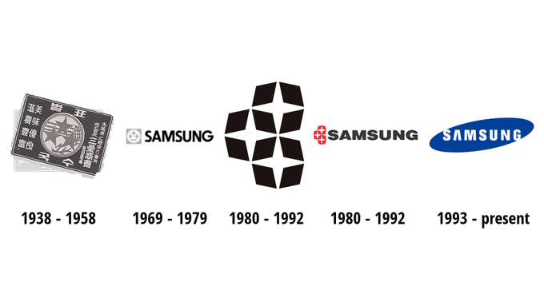
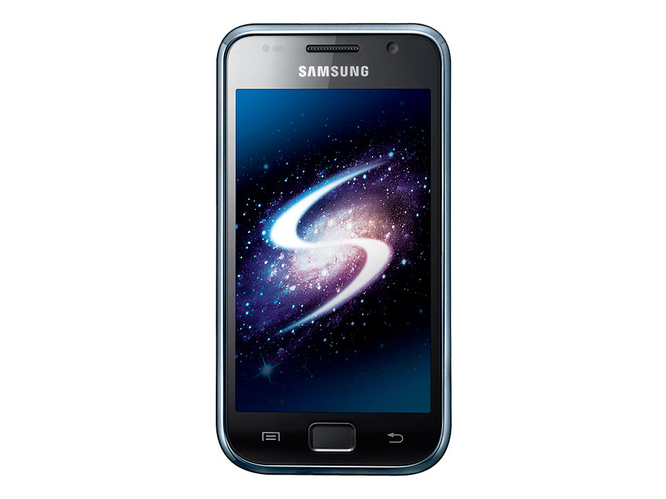
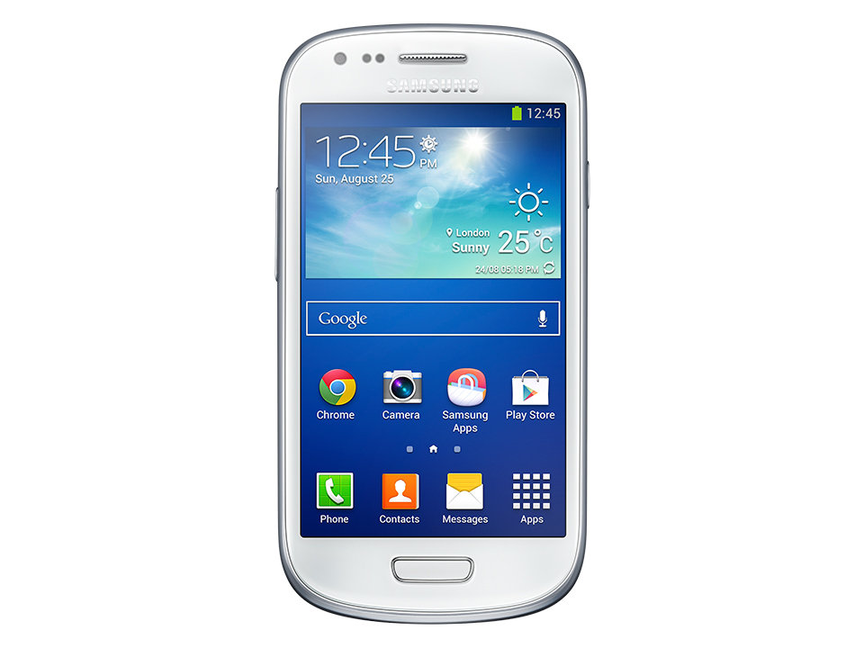
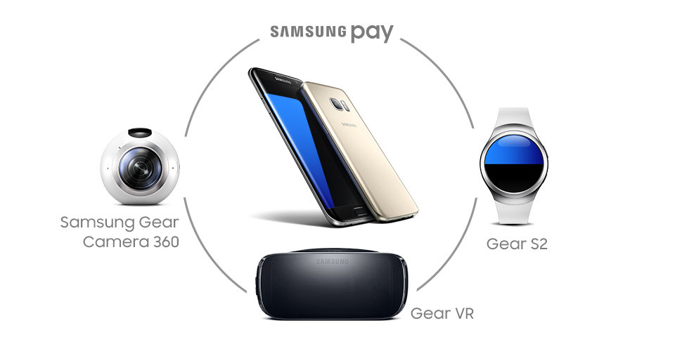

Esta empresa se creó el 1 de marzo de año 1938 por un empresario llamado Lee Byung-chul como ya lo observamos desde si crecido considerablemente, pero es a partir del año 1990 cuando su alcance comienza a ser internacional, gracias a la producción de electrodomésticos, y teléfonos celulares.
El término Samsung proviene del idioma coreano y tiene como significado tres estrellas, este nombre se lo coloco su fundador Lee Kun Hee, en representación de los sueños que él tenía con su empresa, pues su visión era que su empresa llegara a ser tan majestuosa y permanente como las estrellas del universo, al principio su logo poseía estrellas, pero a partir del año 1993 Samsung toma la forma de logo que conocemos actualmente.
Samsung Electronics se crea el 1 de noviembre de 1969 en Corea del Sur, sus primeras producciones fueron televisores, calculadoras, neveras, aires acondicionados y lavavajillas ya para el año 1981 la empresa había creado más de 10.000.000 de televisores blanco y negro, y con el paso de los años comenzó a crearos a color la empresa alrededor de 1970 también hizo una sede dedicada a la creación de bienes de consumo
En el año 1990 esta era la empresa más importante de corea y ha logrado ser de gran utilidad para su país con el paso de los años. En el año 2000 era una de las empresas de su ramo con más enriquecimiento en el mundo, y cuando muchas empresas quebraron por las crisis financieras ocurrida,Samsung electronics permaneció.En marzo de 2010 se lanzó Samsung Galaxy S, el Smartphone más potente del mercado. Desde entonces, cada nuevo modelo de la familia Galaxy S ha mejorado aún más respecto a su predecesor en aspectos como la tecnología incorporada o la usabilidad. Así ha sido su viaje hasta la actualidad.
La llegada de Samsung Galaxy S supuso un hito tecnológico en el sector, prueba de ello es que fue considerado el Smartphone más potente del mercado En 2011 Galaxy SII se lanzó a nivel mundial , incorporando mejoras como un mayor tamaño de pantalla, un procesador más potente (Dual Core- dos núcleos…) y mejores cámaras y batería.
A través de una actualización, Samsung Galaxy S3 introdujo el modo Multi-Window , un modo operativo que permitía abrir dos aplicaciones de forma simultánea y mostrarlas a la vez en su pantalla, eligiendo cuánto ocupaba cada una de ellas. Es la primera aproximación a multitasking o multitarea en la familia Galaxy S. Samsung Galaxy S4 fue el primer modelo en incorporar una pantalla Full HD Super AMOLED de 5 pulgadas con 2 GB de RAM y un mejor procesador.
Con todas estas novedades, el terminal fue más ligero y fino que su predecesor.
Samsung Galaxy S5, con lector de huella dactilar El nuevo modelo de la familia Galaxy S se presentó con una interfaz renovada, unos mejores componentes y algunas novedades importantes como el lector de huella dactilar (situado en el botón de inicio)
Samsung Galaxy S5 aumentaba la pantalla del Samsung Galaxy S4 a 5,1 pulgadas, y por primera vez incorporaba un coprocesador para mejorar tanto el rendimiento, como la fidelidad enlos colores.
Samsung Galaxy S6 y Galaxy S6 Edge, llega el Gorilla glass y la doble pantalla curva La novedad más esperada llegó con los Galaxy S6 : la parte trasera y frontal del Smartphone presentaban el borde metálico, así como el uso de gorilla glass en la parte frontal y trasera, que dotaba al conjunto de gran resistencia. Además, Galaxy S6 Edge fue el pionero en introducir lo que será una de las señas de identidad de la familia Galaxy S: la doble pantalla curva .

Samsung Galaxy S7 se presentó lo que se denominó el ecosistema Phone + un conjunto de dispositivos pensados para crear y vivir una nueva realidad: Samsung Gear Fit2 , Samsung Gear S3 (Smartwatch), Gear VR (gafas de realidad virtual) y Samsung Gear 360.
